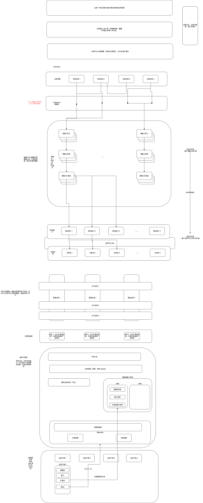

<!DOCTYPE html>
<html>
<head><meta name="generator" content="Hexo 3.9.0">
  <meta charset="utf-8">
  
  <title>插件化架构 | 守株阁</title>
  <meta name="viewport" content="width=device-width, initial-scale=1, maximum-scale=1">
  <meta name="description" content="为什么要实现插件化架构业务和平台要解耦。业务和平台都是多对多的关系。全链路里既有业务，也有平台。大家应该如何 talk by interface。我们看待复杂组织的业务流程，要线性看，看到很多节点；也要分层看，看到复合的层次。在这种情况下，上层架构域和下层架构域之间怎么实现复杂度的管理？ 从业务视角来看，要解决多团队协同的问题因为多个业务域/团队没有把能力用统一的方式透出，所以没有人能够知道统一的">
<meta name="keywords" content="系统架构,未完成,领域驱动设计,插件化">
<meta property="og:type" content="article">
<meta property="og:title" content="插件化架构">
<meta property="og:url" content="http://yoursite.com/2021/05/27/插件化架构/index.html">
<meta property="og:site_name" content="守株阁">
<meta property="og:description" content="为什么要实现插件化架构业务和平台要解耦。业务和平台都是多对多的关系。全链路里既有业务，也有平台。大家应该如何 talk by interface。我们看待复杂组织的业务流程，要线性看，看到很多节点；也要分层看，看到复合的层次。在这种情况下，上层架构域和下层架构域之间怎么实现复杂度的管理？ 从业务视角来看，要解决多团队协同的问题因为多个业务域/团队没有把能力用统一的方式透出，所以没有人能够知道统一的">
<meta property="og:locale" content="zh-Hans">
<meta property="og:image" content="http://yoursite.com/2021/05/27/插件化架构/插件化架构.png">
<meta property="og:updated_time" content="2021-05-27T08:13:48.004Z">
<meta name="twitter:card" content="summary">
<meta name="twitter:title" content="插件化架构">
<meta name="twitter:description" content="为什么要实现插件化架构业务和平台要解耦。业务和平台都是多对多的关系。全链路里既有业务，也有平台。大家应该如何 talk by interface。我们看待复杂组织的业务流程，要线性看，看到很多节点；也要分层看，看到复合的层次。在这种情况下，上层架构域和下层架构域之间怎么实现复杂度的管理？ 从业务视角来看，要解决多团队协同的问题因为多个业务域/团队没有把能力用统一的方式透出，所以没有人能够知道统一的">
<meta name="twitter:image" content="http://yoursite.com/2021/05/27/插件化架构/插件化架构.png">
  
    <link rel="alternate" href="/atom.xml" title="守株阁" type="application/atom+xml">
  
  
    <link rel="icon" href="/favicon.png">
  
  
  <link rel="stylesheet" href="/css/style.css">
  

<link rel="stylesheet" href="/css/prism.css" type="text/css">
<link rel="stylesheet" href="/css/prism-line-numbers.css" type="text/css"></head>
</html>
<body>
  <div id="container">
    <div id="wrap">
      <header id="header">
  <div id="banner"></div>
  <div id="header-outer" class="outer">
    
    <div id="header-inner" class="inner">
      <nav id="sub-nav">
        
          <a id="nav-rss-link" class="nav-icon" href="/atom.xml" title="RSS Feed"></a>
        
        <a id="nav-search-btn" class="nav-icon" title="搜索"></a>
      </nav>
      <div id="search-form-wrap">
        <form action="//google.com/search" method="get" accept-charset="UTF-8" class="search-form"><input type="search" name="q" class="search-form-input" placeholder="Search"><button type="submit" class="search-form-submit">&#xF002;</button><input type="hidden" name="sitesearch" value="http://yoursite.com"></form>
      </div>
      <nav id="main-nav">
        <a id="main-nav-toggle" class="nav-icon"></a>
        
          <a class="main-nav-link" href="/">首页</a>
        
          <a class="main-nav-link" href="/archives">归档</a>
        
          <a class="main-nav-link" href="/about">关于</a>
        
      </nav>
      
    </div>
    <div id="header-title" class="inner">
      <h1 id="logo-wrap">
        <a href="/" id="logo">守株阁</a>
      </h1>
      
        <h2 id="subtitle-wrap">
          <a href="/" id="subtitle">一切都是守株待兔，如切如磋，如琢如磨。I am just joking.</a>
        </h2>
      
    </div>
  </div>
</header>
      <div class="outer">
        <section id="main"><article id="post-插件化架构" class="article article-type-post" itemscope itemprop="blogPost">
  <div class="article-meta">
    <a href="/2021/05/27/插件化架构/" class="article-date">
  <time datetime="2021-05-27T08:11:08.000Z" itemprop="datePublished">2021-05-27</time>
</a>
    
  </div>
  <div class="article-inner">
    
    
      <header class="article-header">
        
  
    <h1 class="article-title" itemprop="name">
      插件化架构
    </h1>
  

      </header>
    
    <div class="article-entry" itemprop="articleBody">
      
        <!-- Table of Contents -->
        
        <h1 id="为什么要实现插件化架构"><a href="#为什么要实现插件化架构" class="headerlink" title="为什么要实现插件化架构"></a>为什么要实现插件化架构</h1><p>业务和平台要解耦。业务和平台都是多对多的关系。全链路里既有业务，也有平台。大家应该如何 talk by interface。我们看待复杂组织的业务流程，要线性看，看到很多节点；也要分层看，看到复合的层次。在这种情况下，上层架构域和下层架构域之间怎么实现复杂度的管理？</p>
<h2 id="从业务视角来看，要解决多团队协同的问题"><a href="#从业务视角来看，要解决多团队协同的问题" class="headerlink" title="从业务视角来看，要解决多团队协同的问题"></a>从业务视角来看，要解决多团队协同的问题</h2><p>因为多个业务域/团队没有把能力用统一的方式透出，所以没有人能够知道统一的技术能力应该怎么串联。进行全链路沟通需要大量的沟通对齐工作。</p>
<p>从业务视角来看，复杂性业务要素包含本业务用例里的各种模型。</p>
<h2 id="从平台视角来看，要解决复杂性管理问题"><a href="#从平台视角来看，要解决复杂性管理问题" class="headerlink" title="从平台视角来看，要解决复杂性管理问题"></a>从平台视角来看，要解决复杂性管理问题</h2><p>平台要支撑多种业务，业务的复杂性、差异性，以及众多业务需求不确定性，在各平台内部如何管理和支撑？使用简单的 if-else 是很难管理好，确保对业务的支撑能力不相互影响。隔离是最好的管理手法。</p>
<p>从平台视角来看，复杂性业务要素包含本域内标准系统用例里的各种模型。</p>
<p>同一个模型，在业务场景里看到的是具体的模型-如外卖；而在平台层想到的是商品。业务层看到的是外卖的成交、制作、配送，而平台层看到的是商品的上单、供给、交易、退款、履约。</p>
<h1 id="如何实现插件化架构"><a href="#如何实现插件化架构" class="headerlink" title="如何实现插件化架构"></a>如何实现插件化架构</h1><p>通过插件化技术架构，使业务与平台隔离，解决业务差异性和不确定性。让业务可以扩展平台能力-通过回调来实现架构上的反向依赖，但主流程大部分时候是跑在平台里的。</p>
<h2 id="具体原则"><a href="#具体原则" class="headerlink" title="具体原则"></a>具体原则</h2><ul>
<li>平台提供经过业务抽象的、标准化业务能力；同时提供可扩展的扩展点（extension 或者 slot），开放给业务进行个性化定制。</li>
<li>业务基于可扩展扩展点，进行业务个性化定制开发，实现自己的业务。</li>
<li>平台与业务是共建、共享、反哺的关系。平台深入到业务，抽象建模出通用的标准业务能力，同时设计供业务进行个性定制的扩展点。</li>
</ul>
<h2 id="通过-sdk-进行通信和解耦"><a href="#通过-sdk-进行通信和解耦" class="headerlink" title="通过 sdk 进行通信和解耦"></a>通过 sdk 进行通信和解耦</h2><p>统一业务语言和概念，把控业务全貌。</p>
<ul>
<li>从各平台提供的平台产品/商业能力视角出发，构建全平台统一SDK，分门别类设计能力扩展点，统一透出给业务方进行个性化定制，提供缺省的扩展点封装实现。</li>
<li>统一业务身份，一个业务扩展包、一个业务身份贯穿所有业务平台。</li>
<li>构建业务运营支撑发布平台，业务可视、可管、可运营。</li>
<li>通过业务能力SDK + 运营支撑发布平台，把商业能力、需求结构化和服务代码建立映射，做到需求即PRD-&gt; PRD即代码 -&gt; 代码即部署 -&gt; 部署即监控。</li>
</ul>
<p><br><a href="插件化架构.drawio">插件化架构.drawio</a></p>
<h1 id="TMF"><a href="#TMF" class="headerlink" title="TMF"></a>TMF</h1><h1 id="BPF"><a href="#BPF" class="headerlink" title="BPF"></a>BPF</h1><h1 id="COLA"><a href="#COLA" class="headerlink" title="COLA"></a>COLA</h1>
      
    </div>
    <footer class="article-footer">
      <a data-url="http://yoursite.com/2021/05/27/插件化架构/" data-id="ckp6t2hu600ftoba1uzpcue18" class="article-share-link">分享</a>
      
      
      
  <ul class="article-tag-list"><li class="article-tag-list-item"><a class="article-tag-list-link" href="/tags/插件化/">插件化</a></li><li class="article-tag-list-item"><a class="article-tag-list-link" href="/tags/未完成/">未完成</a></li><li class="article-tag-list-item"><a class="article-tag-list-link" href="/tags/系统架构/">系统架构</a></li><li class="article-tag-list-item"><a class="article-tag-list-link" href="/tags/领域驱动设计/">领域驱动设计</a></li></ul>

    </footer>
  </div>
  
    
 <script src="/jquery/jquery.min.js"></script>
  <div id="random_posts">
    <h2>推荐文章</h2>
    <div class="random_posts_ul">
      <script>
          var random_count =4
          var site = {BASE_URI:'/'};
          function load_random_posts(obj) {
              var arr=site.posts;
              if (!obj) return;
              // var count = $(obj).attr('data-count') || 6;
              for (var i, tmp, n = arr.length; n; i = Math.floor(Math.random() * n), tmp = arr[--n], arr[n] = arr[i], arr[i] = tmp);
              arr = arr.slice(0, random_count);
              var html = '<ul>';
            
              for(var j=0;j<arr.length;j++){
                var item=arr[j];
                html += '<li><strong>' + 
                item.date + ':&nbsp;&nbsp;<a href="' + (site.BASE_URI+item.uri) + '">' + 
                (item.title || item.uri) + '</a></strong>';
                if(item.excerpt){
                  html +='<div class="post-excerpt">'+item.excerpt+'</div>';
                }
                html +='</li>';
                
              }
              $(obj).html(html + '</ul>');
          }
          $('.random_posts_ul').each(function () {
              var c = this;
              if (!site.posts || !site.posts.length){
                  $.getJSON(site.BASE_URI + 'js/posts.js',function(json){site.posts = json;load_random_posts(c)});
              } 
               else{
                load_random_posts(c);
              }
          });
      </script>
    </div>
  </div>

    
<nav id="article-nav">
  
  
    <a href="/2021/05/27/故障演练平台设计/" id="article-nav-older" class="article-nav-link-wrap">
      <strong class="article-nav-caption">下一篇</strong>
      <div class="article-nav-title">故障演练平台设计</div>
    </a>
  
</nav>

  
</article>
 
     
  <div class="comments" id="comments">
    
     
       
      <div id="cloud-tie-wrapper" class="cloud-tie-wrapper"></div>
    
       
      
      
  </div>
 
  

</section>
           
    <aside id="sidebar">
  
    

  
    
    <div class="widget-wrap">
    
      <div class="widget" id="toc-widget-fixed">
      
        <strong class="toc-title">文章目录</strong>
        <div class="toc-widget-list">
              <ol class="toc"><li class="toc-item toc-level-1"><a class="toc-link" href="#为什么要实现插件化架构"><span class="toc-number">1.</span> <span class="toc-text">为什么要实现插件化架构</span></a><ol class="toc-child"><li class="toc-item toc-level-2"><a class="toc-link" href="#从业务视角来看，要解决多团队协同的问题"><span class="toc-number">1.1.</span> <span class="toc-text">从业务视角来看，要解决多团队协同的问题</span></a></li><li class="toc-item toc-level-2"><a class="toc-link" href="#从平台视角来看，要解决复杂性管理问题"><span class="toc-number">1.2.</span> <span class="toc-text">从平台视角来看，要解决复杂性管理问题</span></a></li></ol></li><li class="toc-item toc-level-1"><a class="toc-link" href="#如何实现插件化架构"><span class="toc-number">2.</span> <span class="toc-text">如何实现插件化架构</span></a><ol class="toc-child"><li class="toc-item toc-level-2"><a class="toc-link" href="#具体原则"><span class="toc-number">2.1.</span> <span class="toc-text">具体原则</span></a></li><li class="toc-item toc-level-2"><a class="toc-link" href="#通过-sdk-进行通信和解耦"><span class="toc-number">2.2.</span> <span class="toc-text">通过 sdk 进行通信和解耦</span></a></li></ol></li><li class="toc-item toc-level-1"><a class="toc-link" href="#TMF"><span class="toc-number">3.</span> <span class="toc-text">TMF</span></a></li><li class="toc-item toc-level-1"><a class="toc-link" href="#BPF"><span class="toc-number">4.</span> <span class="toc-text">BPF</span></a></li><li class="toc-item toc-level-1"><a class="toc-link" href="#COLA"><span class="toc-number">5.</span> <span class="toc-text">COLA</span></a></li></ol>
          </div>
      </div>
    </div>

  
    

  
    
  
    
  
    

  
    
  
    <!--微信公众号二维码-->


  
</aside>

      </div>
      <footer id="footer">
  
  <div class="outer">
    <div id="footer-left">
      &copy; 2014 - 2021 magicliang&nbsp;|&nbsp;
      主题 <a href="https://github.com/giscafer/hexo-theme-cafe/" target="_blank">Cafe</a>
    </div>
     <div id="footer-right">
      联系方式&nbsp;|&nbsp;magicliang@qq.com
    </div>
  </div>
</footer>
 <script src="/jquery/jquery.min.js"></script>
    </div>
    <nav id="mobile-nav">
  
    <a href="/" class="mobile-nav-link">首页</a>
  
    <a href="/archives" class="mobile-nav-link">归档</a>
  
    <a href="/about" class="mobile-nav-link">关于</a>
  
</nav>
    
<script>
// Elevator script included on the page, already.
window.onload = function() {
  var elevator = new Elevator({
    selector:'.back-to-top-btn',
    element: document.querySelector('.back-to-top-btn'),
    duration: 1000 // milliseconds
  });
}
</script>
      

  
    <script>
      var cloudTieConfig = {
        url: document.location.href, 
        sourceId: "",
        productKey: "e2fb4051c49842688ce669e634bc983f",
        target: "cloud-tie-wrapper"
      };
    </script>
    <script src="https://img1.ws.126.net/f2e/tie/yun/sdk/loader.js"></script>
    

  


<!-- author:forvoid begin -->
<!-- author:forvoid begin -->

<!-- author:forvoid end -->

<!-- author:forvoid end -->


  
    <script type="text/x-mathjax-config">
      MathJax.Hub.Config({
        tex2jax: {
          inlineMath: [ ['$','$'], ["\\(","\\)"]  ],
          processEscapes: true,
          skipTags: ['script', 'noscript', 'style', 'textarea', 'pre', 'code']
        }
      })
    </script>

    <script type="text/x-mathjax-config">
      MathJax.Hub.Queue(function() {
        var all = MathJax.Hub.getAllJax(), i;
        for (i=0; i < all.length; i += 1) {
          all[i].SourceElement().parentNode.className += ' has-jax';
        }
      })
    </script>
    <script type="text/javascript" src="https://cdn.rawgit.com/mathjax/MathJax/2.7.1/MathJax.js?config=TeX-AMS-MML_HTMLorMML"></script>
  


 <script src="/js/is.js"></script>


  <link rel="stylesheet" href="/fancybox/jquery.fancybox.css">
  <script src="/fancybox/jquery.fancybox.pack.js"></script>


<script src="/js/script.js"></script>
<script src="/js/elevator.js"></script>
  </div>
</body>
</html>